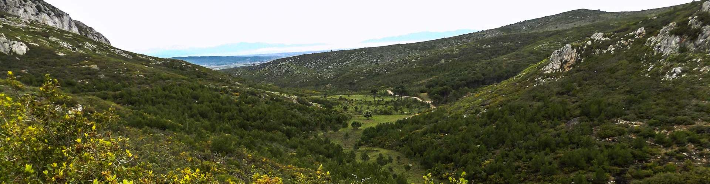

Ruta · Montgrí
Aquest itinerari circular permet visitar els principals punts de la part central del massís del Montgrí. Partint de la casa del Guarda, anirem a voltar fins a l’ermita de Santa Caterina i pujarem…